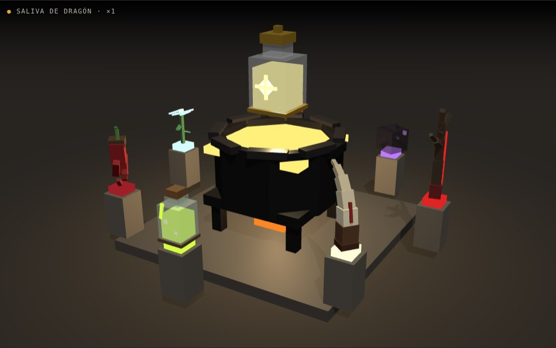

En el juego se ve con el botón «Cura» (o la tecla R). El progreso es de todo el servidor: cualquiera puede echar ingredientes al caldero.
Construido con los mismos planos que usa el instalador. La flor de luna se abre solo de noche: prueba a quitar «Noche».
roblox/InstallCure.lua en la Command Bar: pone el caldero en CAULDRON_POS y la guarida del dragón en LAIR_POS.CureDrop (por ejemplo "BloodRoot").Cure.CureBrewingStarted (lanza una horda) y Cure.CureCompleted (el final).No se ha probado dentro de Roblox Studio. La lógica de la receta, el botín, la preparación y el jefe sí, en simulación.